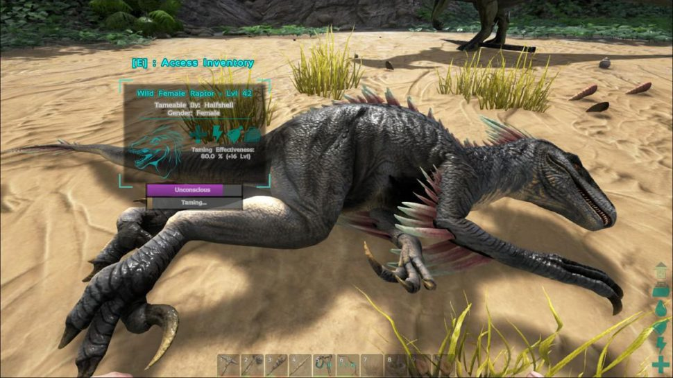
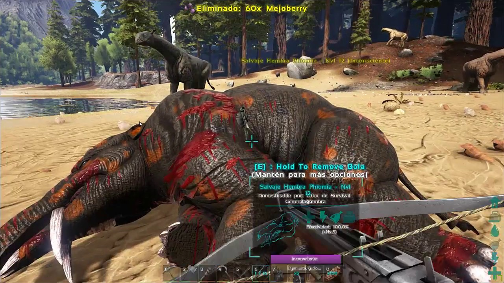
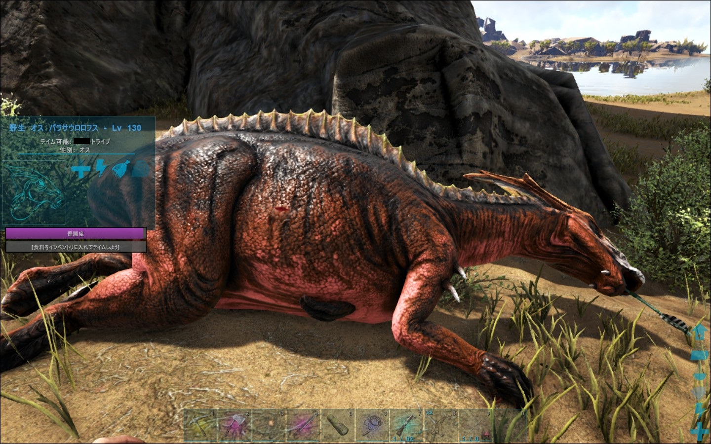
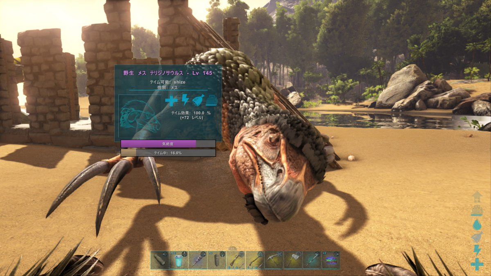
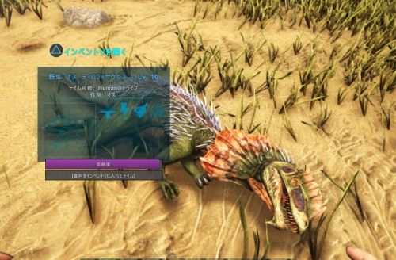
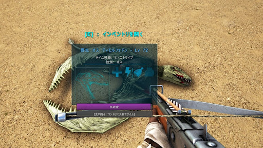

¿Quieres entender un poco mas de la dometicacion en ARK Survival Evolved?
Introduccion en la domestiacaion en ark
¿Quieres saber los métodos de tameo de algunos dinosaurios de ARK?
Tabla de Tameo de los Dinosarios
¿Quieres conocer las diferentes etapas del proceso de domesticación en ARK?
Etapas de Domesticación
¿Quieres encontrar material de interés acerca de los tipos de tameo en ARK?
Material de Interes de ARK
¿Quieres encontrar mas amigos amantes de los dinosaurios?
Amigos en ARK
Posible Material de tu interés, amante de los dinosaurios
Videos Recomendados para principiantes en Tameos en ARK
Enlaces de tu interés para comprender mejor estos procesos de tameo
1. Calculadora de Tiempo de Tameo.
2. Wiki de Ark Survival Evolved.
3. Un poco de contextualización de Ark.
4. ARK en Epic Games.
5. ARK en Steam.
6. ARK para mobiles.
Imagenes Finales
     